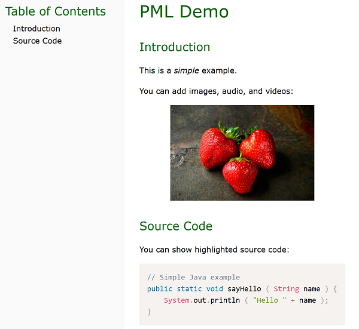

easy for everybody.
What is PML?
The Practical Markup Language (PML) is a free, open source (Github), advanced document markup language.
PML simplifies the process of writing technical and non-technical web articles and books that look good out-of-the-box and are highly customizable.
Why PML?
PML has been carefully designed from the ground up to get rid of problems, limitations, and impracticalities encountered with existing markup languages. PML works well even if your documents are big and/or complex.
PML provides a set of powerful features to simplify, customize, and automate the writing process as far as possible.
How does it work?
Suppose we want to create the following simple web document:
Here is the PML code to create the above web page:
File example.pml
[doc [title PML Demo] [ch [title Introduction] This is a [i simple] example. You can add images, audio, and videos: [image ( source = images/strawberries.jpg width = 300 align = center )] ] [ch [title Source Code] You can show highlighted source code: [code (lang=java) // Simple Java example public static void sayHello ( String name ) { System.out.println ( "Hello " + name ); } code] ] ]
To create the HTML file, you type a simple command like the following one in a terminal:
pmlc p2h example.pml
The presentation and style of the final document (table of contents, font, color, etc.) can be customized to match your preferences.
Should you give it a try?
Yes if:
- runs on Windows, Linux, and macOS
- provides a desktop application (GUI), command line interface (CLI), and application program interface (API)
- is free, open-source, easy to learn and use, and simple to install (no dependencies)
No if:
Or read: We Need a New Document Markup Language - Here is Why.